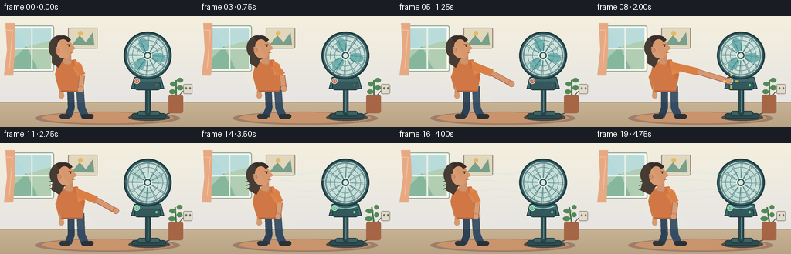
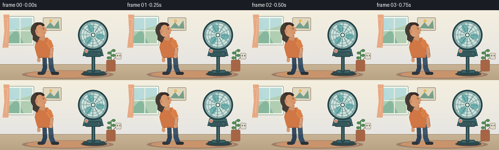

CODING AGENTS AS PIXEL WORLD MODELS
traex/GPT-5.6-Sol · motion_rationality_0047
点击播放 · 原生 RGB 像素
逐轮保存的候选
回放视频、检查图与代码变化。
每份候选均可单独播放。实际图片检查记录在下方工具轨迹中。
候选 01播放与检查图
点击播放 · 原生 RGB 像素


展开代码变化
--- 上一保存版本
+++ 本次保存版本
@@ -0,0 +1,262 @@
+from pathlib import Path
+import json, math
+import numpy as np
+from PIL import Image, ImageDraw, ImageFilter
+import artifact_io
+
+CASE_DIR = Path(__file__).resolve().parent
+SPEC = json.loads((CASE_DIR / 'task_spec.json').read_text())
+W, H, N = SPEC['width'], SPEC['height'], SPEC['frames']
+S = 4
+
+# Supersampled vector helpers
+def sc(v): return int(round(v*S))
+def box(b): return tuple(sc(x) for x in b)
+def pts(p): return [(sc(x), sc(y)) for x,y in p]
+def clamp(v,a=0,b=1): return max(a,min(b,v))
+def smooth(v):
+ v=clamp(v); return v*v*(3-2*v)
+
+def line(d, p, fill, width=1, joint='curve'):
+ d.line(pts(p), fill=fill, width=sc(width), joint=joint)
+def ellipse(d,b,fill=None,outline=None,width=1):
+ d.ellipse(box(b),fill=fill,outline=outline,width=sc(width))
+def polygon(d,p,fill): d.polygon(pts(p),fill=fill)
+def rounded(d,b,r,fill,outline=None,width=1):
+ d.rounded_rectangle(box(b),radius=sc(r),fill=fill,outline=outline,width=sc(width))
+def arc(d,b,a0,a1,fill,width=1): d.arc(box(b),a0,a1,fill=fill,width=sc(width))
+
+def regular_poly(cx,cy,r,n,rot=0):
+ return [(cx+math.cos(rot+2*math.pi*k/n)*r, cy+math.sin(rot+2*math.pi*k/n)*r) for k in range(n)]
+
+def blade_poly(cx,cy,ang):
+ # Broad, rounded-looking tapered fan blade in local polar coordinates.
+ local=[(4,-2),(9,-5),(17,-7),(23,-3),(24,1),(20,5),(12,6),(6,3)]
+ c,s=math.cos(ang),math.sin(ang)
+ return [(cx+x*c-y*s,cy+x*s+y*c) for x,y in local]
+
+def gradient_background(im, frame):
+ a=np.array(im)
+ for y in range(sc(112)):
+ q=y/max(1,sc(112)-1)
+ a[y,:,0]=np.clip(244-13*q,0,255)
+ a[y,:,1]=np.clip(239-10*q,0,255)
+ a[y,:,2]=np.clip(222+5*q,0,255)
+ for y in range(sc(112),sc(H)):
+ q=(y-sc(112))/max(1,sc(H-112))
+ a[y,:,0]=np.clip(199-15*q,0,255)
+ a[y,:,1]=np.clip(178-15*q,0,255)
+ a[y,:,2]=np.clip(148-15*q,0,255)
+ im.paste(Image.fromarray(a, 'RGBA'))
+
+def draw_room(d, f, breeze):
+ # warm architectural details
+ line(d,[(0,111.5),(256,111.5)],(155,133,109),1)
+ # Window and outdoor hint
+ rounded(d,(12,12,70,72),3,(246,247,236),(149,169,160),1.3)
+ rounded(d,(16,16,66,68),1,(181,218,220))
+ # simple sky gradient panes
+ polygon(d,[(16,45),(66,31),(66,68),(16,68)],(172,204,178))
+ polygon(d,[(16,57),(34,39),(48,68),(16,68)],(134,183,156))
+ line(d,[(41,16),(41,68)],(231,239,228),2)
+ line(d,[(16,42),(66,42)],(231,239,228),2)
+ # Curtain on far left, slightly stirred only once the fan is on
+ sway=2.0*breeze*math.sin(f*0.85)
+ polygon(d,[(7,9),(19,9),(19+sway,42),(17-sway*.3,77),(5,77),(9+sway*.4,44)],(231,169,132))
+ line(d,[(8,18),(16,18+sway*.2),(12,67)],(244,194,159),1)
+ # framed art
+ rounded(d,(88,15,126,42),2,(224,215,189),(141,126,112),1)
+ polygon(d,[(93,37),(103,25),(111,34),(120,21),(122,38)],(119,159,139))
+ ellipse(d,(101,19,107,25),(235,183,92))
+ # rug and furniture shadows
+ ellipse(d,(45,124,233,141),(159,126,105))
+ ellipse(d,(54,125,224,139),(201,148,108))
+ # wall outlet and fan cord
+ rounded(d,(237,88,249,101),2,(224,218,203),(158,149,134),1)
+ ellipse(d,(240,92,242,95),(105,104,99)); ellipse(d,(245,92,247,95),(105,104,99))
+ line(d,[(237,97),(229,106),(224,124),(208,130)],(67,73,75),1.2)
+ # low plant, leaves respond subtly away from fan (left)
+ rounded(d,(218,102,237,126),3,(166,102,70))
+ line(d,[(228,103),(228-3*breeze,83)],(73,119,78),2)
+ leaf_shift=-4*breeze
+ for x,y,sgn in [(228,89,-1),(229,94,1),(227,99,-1),(229,84,1)]:
+ x0=x+min(0,8*sgn)+leaf_shift*(.7 if sgn<0 else .2)
+ x1=x+max(0,8*sgn)+leaf_shift*(.2 if sgn<0 else .7)
+ ellipse(d,(x0,y-4,x1,y+2), (83,137,86))
+
+def draw_airflow(base, f, breeze):
+ if breeze < .05: return
+ lay=Image.new('RGBA',base.size,(0,0,0,0)); d=ImageDraw.Draw(lay)
+ # airy broken ribbons travel from the fan toward the person
+ for j,(yy,length) in enumerate([(39,46),(49,61),(61,52),(71,38)]):
+ phase=(f*7+j*13)%22
+ x2=165-phase*.35
+ x1=x2-length*breeze
+ if x1 < x2-3:
+ curve=[]
+ for k in range(18):
+ u=k/17
+ x=x2-(x2-x1)*u
+ y=yy+1.3*math.sin(u*math.pi*2+f*.7+j)
+ curve.append((x,y))
+ line(d,curve,(193,234,231,int(95*breeze)),1.25)
+ # arrow-like tapered flick at the leading edge
+ line(d,[(x1+4,yy-2),(x1,yy),(x1+4,yy+2)],(193,234,231,int(80*breeze)),.8)
+ base.alpha_composite(lay)
+
+def draw_fan(base, f, breeze, pressed):
+ d=ImageDraw.Draw(base)
+ cx,cy=191,51
+ # floor shadow and base
+ ellipse(d,(166,127,220,136),(75,76,71,85))
+ rounded(d,(170,126,215,133),4,(45,76,80),(31,55,59),1)
+ rounded(d,(178,123,207,130),3,(59,98,101),(31,55,59),1)
+ # telescoping stem
+ rounded(d,(188,87,195,128),3,(42,78,83),(28,55,60),1)
+ line(d,[(191.5,91),(191.5,124)],(108,145,146),1)
+ # rear neck
+ rounded(d,(187,68,197,84),4,(39,72,77),(25,49,53),1)
+ # control housing
+ polygon(d,[(174,79),(208,79),(212,94),(170,94)],(64,105,108))
+ line(d,[(174,79),(208,79),(212,94),(170,94),(174,79)],(31,62,66),1)
+ rounded(d,(174,85,208,96),4,(52,88,92),(29,58,62),1)
+ # button within easy reach
+ ellipse(d,(173.2,80.2,180.8,87.8),(79,191,126) if pressed else (202,97,77),(233,247,222),.8)
+ # power glyph and status lamp
+ arc(d,(175.2,81.6,178.8,85.3),-45,225,(246,250,235),.55)
+ line(d,[(177,81.0),(177,83.1)],(246,250,235),.55)
+ ellipse(d,(201,88,204,91),(95,226,145) if pressed else (91,102,98))
+ # fan rear shell
+ ellipse(d,(160,20,222,82),(53,92,97),(25,57,63),2)
+ ellipse(d,(163,23,219,79),(205,226,220),(61,105,108),1)
+ # back grille concentric circles
+ for r in [25,20,14]:
+ ellipse(d,(cx-r,cy-r,cx+r,cy+r),None,(104,142,142),.7)
+ # Rear radial guard lines
+ for k in range(12):
+ a=2*math.pi*k/12
+ line(d,[(cx+4*math.cos(a),cy+4*math.sin(a)),(cx+26*math.cos(a),cy+26*math.sin(a))],(111,148,147),.65)
+ # fan blades on a transparent layer, ghosted according to speed
+ blade_layer=Image.new('RGBA',base.size,(0,0,0,0)); bd=ImageDraw.Draw(blade_layer)
+ n=max(0,f-8)
+ angle=math.radians(8*n+7*n*n+12)
+ ghosts=1 if breeze<.18 else 3+int(7*breeze)
+ spread=.06+.34*breeze
+ for g in range(ghosts):
+ off=(g-(ghosts-1)/2)*spread/max(1,ghosts-1)
+ alpha=190 if ghosts==1 else int(70/ghosts+28)
+ for k in range(3):
+ polygon(bd,blade_poly(cx,cy,angle+2*math.pi*k/3+off),(83,161,161,alpha))
+ if breeze>.55:
+ # translucent sweep makes rapid rotation unmistakable
+ ellipse(bd,(171,31,211,71),(103,183,179,int(20*breeze)))
+ for k in range(3):
+ arc(bd,(168,28,214,74),math.degrees(angle)+k*120,math.degrees(angle)+k*120+52,(157,218,210,int(85*breeze)),1.8)
+ base.alpha_composite(blade_layer)
+ d=ImageDraw.Draw(base)
+ # hub and front protective cage
+ ellipse(d,(185,45,197,57),(46,91,96),(232,242,233),1.3)
+ ellipse(d,(188,48,194,54),(223,231,215))
+ for k in range(12):
+ a=2*math.pi*k/12+.08
+ line(d,[(cx+6*math.cos(a),cy+6*math.sin(a)),(cx+28*math.cos(a),cy+28*math.sin(a))],(55,93,97),.55)
+ ellipse(d,(160,20,222,82),None,(30,59,64),2)
+ ellipse(d,(165,25,217,77),None,(76,119,121),.8)
+ # tiny vibration / speed marks
+ if breeze>.45:
+ for off in [-1,1]:
+ arc(d,(156+off,17,226+off,85),65,112,(149,210,204),.7)
+
+def draw_person(base, f, reach, breeze):
+ d=ImageDraw.Draw(base)
+ lean=3.0*reach
+ # Rear leg and shoe
+ line(d,[(91+lean*.3,92),(92,119),(88,130)],(44,64,86),9)
+ rounded(d,(77,127,91,133),3,(46,54,59))
+ # Front leg
+ line(d,[(103+lean*.5,91),(105,118),(110,130)],(52,76,99),10)
+ rounded(d,(105,127,121,133),3,(40,49,54))
+ # back arm, relaxed; sleeves and hand
+ line(d,[(84+lean,65),(76,79),(80,94)],(202,117,66),9)
+ line(d,[(80,91),(79,103)],(201,139,102),6)
+ ellipse(d,(76,99,83,107),(210,149,108))
+ # torso, slight lean toward controls
+ polygon(d,[(75+lean,59),(98+lean,56),(108+lean,75),(105+lean*.6,98),(79+lean*.2,98),(71+lean,76)],(205,111,61))
+ polygon(d,[(96+lean,57),(105+lean,62),(109+lean,73),(99+lean,76)],(224,133,76))
+ line(d,[(79+lean*.2,97),(105+lean*.6,97)],(159,82,51),1)
+ # neckline
+ polygon(d,[(80+lean,59),(87+lean,55),(94+lean,58),(90+lean,64)],(193,129,93))
+ # head and neck
+ rounded(d,(82+lean,49,92+lean,62),3,(205,141,100))
+ # hair behind head; breeze pulls loose strands leftward after activation
+ hairpull=6*breeze*(.55+.45*math.sin(f*.75))
+ ellipse(d,(63+lean-hairpull*.35,25,91+lean,57),(58,48,43))
+ polygon(d,[(67+lean,39),(67+lean-hairpull,61),(76+lean-hairpull*.4,67),(83+lean,53)],(58,48,43))
+ # face profile pointing right
+ ellipse(d,(72+lean,29,94+lean,55),(215,151,109))
+ polygon(d,[(92+lean,36),(98+lean,42),(92+lean,45)],(215,151,109))
+ # front hair cap
+ arc(d,(69+lean,25,94+lean,53),175,325,(55,46,42),5)
+ # ear, eye, brow, mouth
+ ellipse(d,(72+lean,41,77+lean,47),(207,137,99),(158,97,76),.6)
+ ellipse(d,(88.5+lean,38,90+lean,39.5),(47,44,41))
+ line(d,[(86.5+lean,36.5),(91+lean,36.7)],(92,62,53),.7)
+ line(d,[(91+lean,47),(95+lean,47)],(142,77,65),.65)
+ # loose strands made visible by breeze
+ if breeze>.12:
+ for j in range(3):
+ y=48+j*4
+ line(d,[(71+lean,y),(63+lean-hairpull*(.5+j*.15),y+2+j)],(62,49,43),1.2)
+ # active arm pose: interpolate from hanging hand to control
+ sh=(98+lean,64)
+ e0=(106,77); h0=(104,95)
+ e1=(132,72); h1=(174.8,84)
+ ex=e0[0]*(1-reach)+e1[0]*reach+lean
+ ey=e0[1]*(1-reach)+e1[1]*reach
+ hx=h0[0]*(1-reach)+h1[0]*reach
+ hy=h0[1]*(1-reach)+h1[1]*reach
+ # short sleeve then forearm; outlined subtly for readability
+ line(d,[sh,(ex,ey)],(218,127,70),10)
+ line(d,[(ex,ey),(hx,hy)],(163,99,75),7.5)
+ line(d,[(ex,ey),(hx,hy)],(216,151,110),6)
+ ellipse(d,(hx-4,hy-4,hx+4,hy+4),(217,151,110),(157,98,76),.6)
+ # pointing finger reaches the power button during full extension
+ if reach>.72:
+ tipx=177.2
+ line(d,[(hx,hy-1),(tipx,83.7)],(216,151,110),3.4)
+ ellipse(d,(tipx-1.7,82.2,tipx+1.8,85.7),(221,157,114))
+ # brief press sparkle for action clarity
+ if f in (7,8):
+ for a in [0,math.pi/2,math.pi,3*math.pi/2]:
+ line(d,[(178+math.cos(a)*6,84+math.sin(a)*6),(178+math.cos(a)*10,84+math.sin(a)*10)],(250,205,91),1.2)
+
+def render_frame(f):
+ base=Image.new('RGBA',(W*S,H*S),(244,239,222,255))
+ gradient_background(base,f)
+ d=ImageDraw.Draw(base)
+ # Reach: move in frames 2-7, hold while pressing, withdraw frames 9-14
+ if f<2: reach=0
+ elif f<=7: reach=smooth((f-2)/5)
+ elif f<=9: reach=1
+ elif f<=14: reach=1-smooth((f-9)/5)
+ else: reach=0
+ pressed=f>=8
+ breeze=smooth((f-8)/7) if f>=8 else 0
+ draw_room(d,f,breeze)
+ # Fan behind person but airflow is a foreground semantic cue
+ draw_fan(base,f,breeze,pressed)
+ draw_person(base,f,reach,breeze)
+ draw_airflow(base,f,breeze)
+ # global warm sun shaft, very subtle
+ glow=Image.new('RGBA',base.size,(0,0,0,0)); gd=ImageDraw.Draw(glow)
+ polygon(gd,[(18,16),(65,16),(126,112),(82,112)],(255,244,198,15))
+ base=Image.alpha_composite(base,glow)
+ return np.asarray(base.convert('RGB').resize((W,H),Image.Resampling.LANCZOS),dtype=np.uint8)
+
+def main():
+ frames=np.stack([render_frame(i) for i in range(N)],axis=0)
+ artifact_io.save(frames,CASE_DIR)
+ print(f'saved {frames.shape[0]} RGB frames at {frames.shape[2]}x{frames.shape[1]}')
+
+if __name__=='__main__':
+ main()
可观测工具轨迹
实际执行的命令与返回图片。
命令 1exit 0
/bin/bash -lc "cat prompt.txt && printf '\\n--- GENERATION_RULES.md ---\\n' && cat GENERATION_RULES.md && printf '\\n--- task_spec.json ---\\n' && cat task_spec.json"
命令 2exit 0
/bin/bash -lc "find . -maxdepth 3 -type f -printf '%p\\n' | sort && printf '\\n--- tool versions ---\\n' && (ffmpeg -version | head -n 2 || true) && (python3 --version || true)"
命令 3exit 0
/bin/bash -lc 'cat artifact_io.py'
命令 4exit 2
/bin/bash -lc "cat > generate.py <<'PY'
from pathlib import Path
import json, math
import numpy as np
from PIL import Image, ImageDraw, ImageFilter
import artifact_io
CASE_DIR = Path(__file__).resolve().parent
SPEC = json.loads((CASE_DIR / 'task_spec.json').read_text())
W, H, N = SPEC['width'], SPEC['height'], SPEC['frames']
S = 4
# Supersampled vector helpers
def sc(v): return int(round(v*S))
def box(b): return tuple(sc(x) for x in b)
def pts(p): return [(sc(x), sc(y)) for x,y in p]
def clamp(v,a=0,b=1): return max(a,min(b,v))
def smooth(v):
v=clamp(v); return v*v*(3-2*v)
def line(d, p, fill, width=1, joint='curve'):
d.line(pts(p), fill=fill, width=sc(width), joint=joint)
def ellipse(d,b,fill=None,outline=None,width=1):
d.ellipse(box(b),fill=fill,outline=outline,width=sc(width))
def polygon(d,p,fill): d.polygon(pts(p),fill=fill)
def rounded(d,b,r,fill,outline=None,width=1):
d.rounded_rectangle(box(b),radius=sc(r),fill=fill,outline=outline,width=sc(width))
def arc(d,b,a0,a1,fill,width=1): d.arc(box(b),a0,a1,fill=fill,width=sc(width))
def regular_poly(cx,cy,r,n,rot=0):
return [(cx+math.cos(rot+2*math.pi*k/n)*r, cy+math.sin(rot+2*math.pi*k/n)*r) for k in range(n)]
def blade_poly(cx,cy,ang):
# Broad, rounded-looking tapered fan blade in local polar coordinates.
local=[(4,-2),(9,-5),(17,-7),(23,-3),(24,1),(20,5),(12,6),(6,3)]
c,s=math.cos(ang),math.sin(ang)
return [(cx+x*c-y*s,cy+x*s+y*c) for x,y in local]
def gradient_background(im, frame):
a=np.asarray(im)
for y in range(sc(112)):
q=y/max(1,sc(112)-1)
a[y,:,0]=np.clip(244-13*q,0,255)
a[y,:,1]=np.clip(239-10*q,0,255)
a[y,:,2]=np.clip(222+5*q,0,255)
for y in range(sc(112),sc(H)):
q=(y-sc(112))/max(1,sc(H-112))
a[y,:,0]=np.clip(199-15*q,0,255)
a[y,:,1]=np.clip(178-15*q,0,255)
a[y,:,2]=np.clip(148-15*q,0,255)
def draw_room(d, f, breeze):
# warm architectural details
line(d,[(0,111.5),(256,111.5)],(155,133,109),1)
# Window and outdoor hint
rounded(d,(12,12,70,72),3,(246,247,236),(149,169,160),1.3)
rounded(d,(16,16,66,68),1,(181,218,220))
# simple sky gradient panes
polygon(d,[(16,45),(66,31),(66,68),(16,68)],(172,204,178))
polygon(d,[(16,57),(34,39),(48,68),(16,68)],(134,183,156))
line(d,[(41,16),(41,68)],(231,239,228),2)
line(d,[(16,42),(66,42)],(231,239,228),2)
# Curtain on far left, slightly stirred only once the fan is on
sway=2.0*breeze*math.sin(f*0.85)
polygon(d,[(7,9),(19,9),(19+sway,42),(17-sway*.3,77),(5,77),(9+sway*.4,44)],(231,169,132))
line(d,[(8,18),(16,18+sway*.2),(12,67)],(244,194,159),1)
# framed art
rounded(d,(88,15,126,42),2,(224,215,189),(141,126,112),1)
polygon(d,[(93,37),(103,25),(111,34),(120,21),(122,38)],(119,159,139))
ellipse(d,(101,19,107,25),(235,183,92))
# rug and furniture shadows
ellipse(d,(45,124,233,141),(159,126,105))
ellipse(d,(54,125,224,139),(201,148,108))
# wall outlet and fan cord
rounded(d,(237,88,249,101),2,(224,218,203),(158,149,134),1)
ellipse(d,(240,92,242,95),(105,104,99)); ellipse(d,(245,92,247,95),(105,104,99))
line(d,[(237,97),(229,106),(224,124),(208,130)],(67,73,75),1.2)
# low plant, leaves respond subtly away from fan (left)
rounded(d,(218,102,237,126),3,(166,102,70))
line(d,[(228,103),(228-3*breeze,83)],(73,119,78),2)
leaf_shift=-4*breeze
for x,y,sgn in [(228,89,-1),(229,94,1),(227,99,-1),(229,84,1)]:
ellipse(d,(x-1+(leaf_shift if sgn<0 else 0),y-4,x+8*sgn+leaf_shift*.5,y+2), (83,137,86))
def draw_airflow(base, f, breeze):
if breeze < .05: return
lay=Image.new('RGBA',base.size,(0,0,0,0)); d=ImageDraw.Draw(lay)
# airy broken ribbons travel from the fan toward the person
for j,(yy,length) in enumerate([(39,46),(49,61),(61,52),(71,38)]):
phase=(f*7+j*13)%22
x2=165-phase*.35
x1=x2-length*breeze
if x1 < x2-3:
curve=[]
for k in range(18):
u=k/17
x=x2-(x2-x1)*u
y=yy+1.3*math.sin(u*math.pi*2+f*.7+j)
curve.append((x,y))
line(d,curve,(193,234,231,int(95*breeze)),1.25)
# arrow-like tapered flick at the leading edge
line(d,[(x1+4,yy-2),(x1,yy),(x1+4,yy+2)],(193,234,231,int(80*breeze)),.8)
base.alpha_composite(lay)
def draw_fan(base, f, breeze, pressed):
d=ImageDraw.Draw(base)
cx,cy=191,51
# floor shadow and base
ellipse(d,(166,127,220,136),(75,76,71,85))
rounded(d,(170,126,215,133),4,(45,76,80),(31,55,59),1)
rounded(d,(178,123,207,130),3,(59,98,101),(31,55,59),1)
# telescoping stem
rounded(d,(188,87,195,128),3,(42,78,83),(28,55,60),1)
line(d,[(191.5,91),(191.5,124)],(108,145,146),1)
# rear neck
rounded(d,(187,68,197,84),4,(39,72,77),(25,49,53),1)
# control housing
polygon(d,[(174,79),(208,79),(212,94),(170,94)],(64,105,108))
line(d,[(174,79),(208,79),(212,94),(170,94),(174,79)],(31,62,66),1)
rounded(d,(174,85,208,96),4,(52,88,92),(29,58,62),1)
# button within easy reach
ellipse(d,(173.2,80.2,180.8,87.8),(79,191,126) if pressed else (202,97,77),(233,247,222),.8)
# power glyph and status lamp
arc(d,(175.2,81.6,178.8,85.3),-45,225,(246,250,235),.55)
line(d,[(177,81.0),(177,83.1)],(246,250,235),.55)
ellipse(d,(201,88,204,91),(95,226,145) if pressed else (91,102,98))
# fan rear shell
ellipse(d,(160,20,222,82),(53,92,97),(25,57,63),2)
ellipse(d,(163,23,219,79),(205,226,220),(61,105,108),1)
# back grille concentric circles
for r in [25,20,14]:
ellipse(d,(cx-r,cy-r,cx+r,cy+r),None,(104,142,142),.7)
# Rear radial guard lines
for k in range(12):
a=2*math.pi*k/12
line(d,[(cx+4*math.cos(a),cy+4*math.sin(a)),(cx+26*math.cos(a),cy+26*math.sin(a))],(111,148,147),.65)
# fan blades on a transparent layer, ghosted according to speed
blade_layer=Image.new('RGBA',base.size,(0,0,0,0)); bd=ImageDraw.Draw(blade_layer)
n=max(0,f-8)
angle=math.radians(8*n+7*n*n+12)
ghosts=1 if breeze<.18 else 3+int(7*breeze)
spread=.06+.34*breeze
for g in range(ghosts):
off=(g-(ghosts-1)/2)*spread/max(1,ghosts-1)
alpha=190 if ghosts==1 else int(70/ghosts+28)
for k in range(3):
polygon(bd,blade_poly(cx,cy,angle+2*math.pi*k/3+off),(83,161,161,alpha))
if breeze>.55:
# translucent sweep makes rapid rotation unmistakable
ellipse(bd,(171,31,211,71),(103,183,179,int(20*breeze)))
for k in range(3):
arc(bd,(168,28,214,74),math.degrees(angle)+k*120,math.degrees(angle)+k*120+52,(157,218,210,int(85*breeze)),1.8)
base.alpha_composite(blade_layer)
d=ImageDraw.Draw(base)
# hub and front protective cage
ellipse(d,(185,45,197,57),(46,91,96),(232,242,233),1.3)
ellipse(d,(188,48,194,54),(223,231,215))
for k in range(12):
a=2*math.pi*k/12+.08
line(d,[(cx+6*math.cos(a),cy+6*math.sin(a)),(cx+28*math.cos(a),cy+28*math.sin(a))],(55,93,97),.55)
ellipse(d,(160,20,222,82),None,(30,59,64),2)
ellipse(d,(165,25,217,77),None,(76,119,121),.8)
# tiny vibration / speed marks
if breeze>.45:
for off in [-1,1]:
arc(d,(156+off,17,226+off,85),65,112,(149,210,204),.7)
def draw_person(base, f, reach, breeze):
d=ImageDraw.Draw(base)
lean=3.0*reach
# Rear leg and shoe
line(d,[(91+lean*.3,92),(92,119),(88,130)],(44,64,86),9)
rounded(d,(77,127,91,133),3,(46,54,59))
# Front leg
line(d,[(103+lean*.5,91),(105,118),(110,130)],(52,76,99),10)
rounded(d,(105,127,121,133),3,(40,49,54))
# back arm, relaxed; sleeves and hand
line(d,[(84+lean,65),(76,79),(80,94)],(202,117,66),9)
line(d,[(80,91),(79,103)],(201,139,102),6)
ellipse(d,(76,99,83,107),(210,149,108))
# torso, slight lean toward controls
polygon(d,[(75+lean,59),(98+lean,56),(108+lean,75),(105+lean*.6,98),(79+lean*.2,98),(71+lean,76)],(205,111,61))
polygon(d,[(96+lean,57),(105+lean,62),(109+lean,73),(99+lean,76)],(224,133,76))
line(d,[(79+lean*.2,97),(105+lean*.6,97)],(159,82,51),1)
# neckline
polygon(d,[(80+lean,59),(87+lean,55),(94+lean,58),(90+lean,64)],(193,129,93))
# head and neck
rounded(d,(82+lean,49,92+lean,62),3,(205,141,100))
# hair behind head; breeze pulls loose strands leftward after activation
hairpull=6*breeze*(.55+.45*math.sin(f*.75))
ellipse(d,(63+lean-hairpull*.35,25,91+lean,57),(58,48,43))
polygon(d,[(67+lean,39),(67+lean-hairpull,61),(76+lean-hairpull*.4,67),(83+lean,53)],(58,48,43))
# face profile pointing right
ellipse(d,(72+lean,29,94+lean,55),(215,151,109))
polygon(d,[(92+lean,36),(98+lean,42),(92+lean,45)],(215,151,109))
# front hair cap
arc(d,(69+lean,25,94+lean,53),175,325,(55,46,42),5)
# ear, eye, brow, mouth
ellipse(d,(72+lean,41,77+lean,47),(207,137,99),(158,97,76),.6)
ellipse(d,(88.5+lean,38,90+lean,39.5),(47,44,41))
line(d,[(86.5+lean,36.5),(91+lean,36.7)],(92,62,53),.7)
line(d,[(91+lean,47),(95+lean,47)],(142,77,65),.65)
# loose strands made visible by breeze
if breeze>.12:
for j in range(3):
y=48+j*4
line(d,[(71+lean,y),(63+lean-hairpull*(.5+j*.15),y+2+j)],(62,49,43),1.2)
# active arm pose: interpolate from hanging hand to control
sh=(98+lean,64)
e0=(106,77); h0=(104,95)
e1=(132,72); h1=(174.8,84)
ex=e0[0]*(1-reach)+e1[0]*reach+lean
ey=e0[1]*(1-reach)+e1[1]*reach
hx=h0[0]*(1-reach)+h1[0]*reach
hy=h0[1]*(1-reach)+h1[1]*reach
# short sleeve then forearm; outlined subtly for readability
line(d,[sh,(ex,ey)],(218,127,70),10)
line(d,[(ex,ey),(hx,hy)],(163,99,75),7.5)
line(d,[(ex,ey),(hx,hy)],(216,151,110),6)
ellipse(d,(hx-4,hy-4,hx+4,hy+4),(217,151,110),(157,98,76),.6)
# pointing finger reaches the power button during full extension
if reach>.72:
tipx=177.2
line(d,[(hx,hy-1),(tipx,83.7)],(216,151,110),3.4)
ellipse(d,(tipx-1.7,82.2,tipx+1.8,85.7),(221,157,114))
# brief press sparkle for action clarity
if f in (7,8):
for a in [0,math.pi/2,math.pi,3*math.pi/2]:
line(d,[(178+math.cos(a)*6,84+math.sin(a)*6),(178+math.cos(a)*10,84+math.sin(a)*10)],(250,205,91),1.2)
def render_frame(f):
base=Image.new('RGBA',(W*S,H*S),(244,239,222,255))
gradient_background(base,f)
d=ImageDraw.Draw(base)
# Reach: move in frames 2-7, hold while pressing, withdraw frames 9-14
if f<2: reach=0
elif f<=7: reach=smooth((f-2)/5)
elif f<=9: reach=1
elif f<=14: reach=1-smooth((f-9)/5)
else: reach=0
pressed=f>=8
breeze=smooth((f-8)/7) if f>=8 else 0
draw_room(d,f,breeze)
# Fan behind person but airflow is a foreground semantic cue
draw_fan(base,f,breeze,pressed)
draw_person(base,f,reach,breeze)
draw_airflow(base,f,breeze)
# global warm sun shaft, very subtle
glow=Image.new('RGBA',base.size,(0,0,0,0)); gd=ImageDraw.Draw(glow)
polygon(gd,[(18,16),(65,16),(126,112),(82,112)],(255,244,198,15))
base=Image.alpha_composite(base,glow)
return np.asarray(base.convert('RGB').resize((W,H),Image.Resampling.LANCZOS),dtype=np.uint8)
def main():
frames=np.stack([render_frame(i) for i in range(N)],axis=0)
artifact_io.save(frames,CASE_DIR)
print(f'saved {frames.shape[0]} RGB frames at {frames.shape[2]}x{frames.shape[1]}')
if __name__=='__main__':
main()
PY
python3 generate.py
ls -lh pixels.npz inspection.png transition_check.png index.html frames/00.png frames/19.png"命令 5exit 1
/bin/bash -lc 'python3 generate.py && ls -lh pixels.npz inspection.png transition_check.png index.html frames/00.png frames/08.png frames/19.png'
命令 6exit 0
/bin/bash -lc 'python3 -m py_compile generate.py && grep -n "artifact_io.save" generate.py'
命令 7exit 0
/bin/bash -lc "python3 generate.py && ls -lh pixels.npz inspection.png transition_check.png index.html frames/00.png frames/08.png frames/19.png && python3 - <<'PY'
from PIL import Image
import numpy as np
fs=np.stack([np.asarray(Image.open(f'frames/{i:02}.png')) for i in range(20)])
print('shape/dtype/range:',fs.shape,fs.dtype,(fs.min(),fs.max()))
print('mean abs frame deltas:',np.round(np.abs(np.diff(fs.astype(float),axis=0)).mean((1,2,3)),2).tolist())
# key-region deltas: arm/control and rotor
for a,b in [(0,7),(7,8),(8,12),(12,19)]:
print(a,b,'full',round(np.abs(fs[b].astype(float)-fs[a]).mean(),2), 'rotor',round(np.abs(fs[b,20:82,160:223].astype(float)-fs[a,20:82,160:223]).mean(),2))
PY"命令 8exit 0
/bin/bash -lc "python3 - <<'PY'
from pathlib import Path
import json, numpy as np
from PIL import Image
p=Path('.')
s=json.loads(Path('task_spec.json').read_text())
files=sorted((p/'frames').glob('*.png'))
assert len(files)==s['frames']==20
for f in files:
im=Image.open(f)
assert im.size==(s['width'],s['height']) and im.mode=='RGB', (f,im.size,im.mode)
z=np.load('pixels.npz')['pixels']
assert z.shape==(s['height'],s['width'],s['frames']) and z.dtype==np.uint32
assert Path('index.html').stat().st_size>0
print('PASS: 20/20 RGB frames, 256x144, packed tensor',z.shape,z.dtype)
print('Artifacts:', ', '.join(x.name for x in [Path('pixels.npz'),Path('index.html'),Path('inspection.png'),Path('transition_check.png')]))
PY"命令 9exit 0
/bin/bash -lc "git status --short 2>/dev/null || true; sha256sum generate.py pixels.npz | sed 's# ./# #'"
保存候选 1 份；完成命令 9 次；可验证图片返回 0 张。原始 API 响应与完整日志保留在本地。